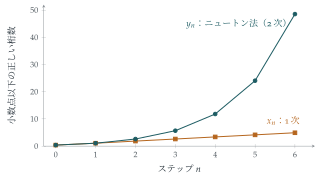

STEP II 2023、第5問
先に進む前に問題を読んでおこう。問題は、OCRが配布している2023年のSTEP問題一式（zipファイル）のSTEP IIに収録されている： www.ocr.org.uk/Images/707102-2023-past-papers.zip
導入
\(\sqrt2\) を近似する簡単な方法を二つ考える。どちらも \(1\) から出発し、使うのは足し算、掛け算、割り算だけである。10 ステップ後、一つ目は小数点以下およそ \(8\) 桁まで正しい。二つ目は \(700\) 桁以上まで正しい。
この違いは、二つ目の方法が \(\sqrt2\) についてより巧妙だからではない。違いは誤差の形にある。一つ目では各ステップで誤差に一定の分数が掛かるが、二つ目では各ステップで誤差が2乗される。この問題はこのことを厳密に述べ、その過程で数値解析（numerical analysis）の中心的な考え方の一つを導入する。数値解析は、あらゆる電卓、あらゆる天気予報、あらゆる工学シミュレーションを支える分野である。
取りかかる前に
それぞれの数列の最初の数項を分数で計算してみよう。 \[x_n: \quad 1,\; \frac32,\; \frac75,\; \frac{17}{12},\; \frac{41}{29},\; \frac{99}{70},\; \ldots \qquad y_n: \quad 1,\; \frac32,\; \frac{17}{12},\; \frac{577}{408},\; \frac{665857}{470832},\; \ldots\]
二つのリストについて何か気づくことはあるだろうか。（両方に現れる分数に注目せよ。）
\(y_n\) はすべて \(x\) のリストに現れるが、その位置はどんどん先になっていく。\(y_2 = x_3\)、\(y_3 = x_7\) であり、一般に \(y_n = x_{2^n - 1}\) である。二つ目の方法は、同じ近似の列を指数関数的な速さで飛ばしながら進んでいるのである。このことを覚えておいてほしい。最後に理由を説明する。
順を追って解く
段階 1 一つ目の方法の値は常に 1 以上である
\(x_{n+1} = 1 + \dfrac{1}{x_n + 1}\) と書ける。\(x_n \geq 1\) ならば \(x_n + 1 > 0\) であるから、\(x_{n+1} > 1\) である。\(x_0 = 1\) であるから、帰納法（induction）により、すべての \(n\) について \(x_n \geq 1\) が成り立つ。■
段階 2 一つ目の方法の誤差
この問題では、誤差を \(x_n - \sqrt2\) ではなく \(x_n^2 - 2\) で測っている。\(x_{n+1}^2 - 2\) を \(x_n\) を用いて一つの分数で表せ。分子について何に気づくだろうか。
\[x_{n+1}^2 - 2 = \frac{(x_n + 2)^2 - 2(x_n + 1)^2}{(x_n + 1)^2} = \frac{x_n^2 + 4x_n + 4 - 2x_n^2 - 4x_n - 2}{(x_n + 1)^2} = \frac{2 - x_n^2}{(x_n + 1)^2}.\] 分子はちょうど \(-(x_n^2 - 2)\) である。したがって \(x_{n+1}^2 - 2\) と \(x_n^2 - 2\) は異符号であり（近似値は \(\sqrt2\) の両側を交互に行き来する）、また \(x_n \geq 1\) より \((x_n + 1)^2 \geq 4\) であるから、 \[\bigl|x_{n+1}^2 - 2\bigr| = \frac{|x_n^2 - 2|}{(x_n + 1)^2} \leq \frac14\bigl|x_n^2 - 2\bigr|. \qed\]
段階 3 10 ステップ
これを 10 回適用すると、\(|x_{10}^2 - 2| \leq 4^{-10}|x_0^2 - 2| = 4^{-10} = \frac{1}{1048576} < 10^{-6}\) となる。符号については、\(x_0^2 - 2 = -1 < 0\) であり、符号は交互に変わるので、偶数の \(n\) ではすべて \(x_n^2 - 2 < 0\) である。よって \(x_{10}^2 < 2\) であり、これらを合わせて \(2 - 10^{-6} \leq x_{10}^2 \leq 2\) を得る。■
\(x_n^2\) の誤差は各ステップで高々 \(\frac14\) 倍になる。これを1次収束（linear convergence）という。1 ステップごとに一定の桁数だけ正しい桁が増える（ここでは少なくとも \(\log_{10} 4 \approx 0.6\) 桁であり、実際には \(0.77\) 桁に近い）。
段階 4 二つ目の方法の誤差
\(y_{n+1} - \sqrt2\) を一つの分数で表せ。分子を見ると完全平方式が思い浮かぶはずである。
\[y_{n+1} - \sqrt2 = \frac{y_n^2 + 2 - 2\sqrt2\, y_n}{2y_n} = \frac{\bigl(y_n - \sqrt2\bigr)^2}{2y_n}. \qed\] \(y_n > 0\) ならば右辺は 0 以上であるから、\(y_{n+1} \geq \sqrt2 > 1\) である。\(y_0 = 1\) であるから、帰納法により、すべての \(n\) について \(y_n \geq 1\) が成り立つ。■（実際には、すべての \(n \geq 1\) について \(y_n \geq \sqrt2\) である。最初のステップの後、二つ目の方法は常に上から \(\sqrt2\) に近づく。）
段階 5 誤差の2乗
\(e_n = y_n - \sqrt2\) とおく。\(n \geq 1\) のとき \(e_n \geq 0\) であり、\(y_n \geq 1\) であるから \(e_{n+1} = \dfrac{e_n^2}{2y_n} \leq \dfrac{e_n^2}{2}\) である。
\(r = \frac{\sqrt2 - 1}{2}\) とするとき、\(n \geq 1\) について \(e_n \leq 2r^{2^n}\) であることを帰納法で証明せよ。初期段階は注意深く確かめること。
初期段階：\(e_1 = \dfrac{(1 - \sqrt2)^2}{2 \cdot 1} = \dfrac{(\sqrt2 - 1)^2}{2}\) であり、一方 \(2r^2 = 2 \cdot \dfrac{(\sqrt2 - 1)^2}{4} = \dfrac{(\sqrt2 - 1)^2}{2}\) である。両者は等しいので、初期段階は（等号で）成り立つ。
帰納段階：\(e_n \leq 2r^{2^n}\) ならば \[e_{n+1} \leq \frac{e_n^2}{2} \leq \frac{4r^{2^{n+1}}}{2} = 2r^{2^{n+1}}. \qed\]
段階 6 600 桁
\(\sqrt2 - 1 < \frac12\) であるから \(r < \frac14\) であり、 \[0 \leq y_{10} - \sqrt2 \leq 2 \left(\frac14\right)^{2^{10}} = 2 \cdot 2^{-2048} = 2^{-2047}.\] ここで \(2^{10} = 1024 > 10^3\) であるから、\(2^{-2047} < 2^{-2040} = (2^{10})^{-204} < 10^{-612}\) であり、これは確かに \(10^{-600}\) より小さい。■
振り返り
誤差の漸化式を求める。どちらの小問も、新しい誤差を古い誤差の厳密な関数として書くことで解けた。残りはすべてそこから導かれた。
1次と2次。「新しい誤差 \(\leq\) 定数 \(\times\) 古い誤差」からは、1 ステップごとに一定の桁数だけ正しい桁が増える。「新しい誤差 \(\leq\) 定数 \(\times\)（古い誤差）\(^2\)」では、1 ステップごとに正しい桁数が2倍になる（図 2.7.1）。
2乗された量が符号を決める。小問 (ii) では、1 ステップ後の誤差は2乗を正の量で割ったものなので、決して負にならない。つまり反復は上から近づく。
背後にある数学
二つ目の方法は、\(f(y) = y^2 - 2\) にニュートン法（Newton’s method）を適用したものである。ニュートン（Newton）法は、推測値 \(y\) を、\(y\) における接線が軸と交わる点で置き換えることを繰り返して、\(f\) の根を求める。 \[y_{\text{new}} = y - \frac{f(y)}{f'(y)} = y - \frac{y^2 - 2}{2y} = \frac{y^2 + 2}{2y}.\] 単根（simple root）\(\alpha\) の近くでは、テイラー展開（Taylor expansion）により新しい誤差はおよそ \(\frac{f''(\alpha)}{2f'(\alpha)} \times (\text{古い誤差})^2\) であることがわかる。これがニュートン法が2次収束（quadratic convergence）する理由である。この特別な場合、すなわち「\(y\) と \(2/y\) の平均をとる」方法はバビロニア人に知られていた。紀元前 1700 年頃の粘土板で、現在 YBC 7289 と呼ばれているものには、\(\sqrt2\) が \(60\) 進法で、誤差 100 万分の 1 未満で記されている。

不動点と収束の速さ
どちらの方法も \(g(\sqrt2) = \sqrt2\) を満たす \(g\) によって \(u_{n+1} = g(u_n)\) という形をしているので、\(\sqrt2\) は不動点（fixed point）である。これは 第 2.2 節 のクモの巣図と同じ状況である。不動点 \(\alpha\) の近くでは、誤差は各ステップでおよそ \(g'(\alpha)\) 倍される。一つ目の方法では \(g(x) = \frac{x+2}{x+1}\) であり、\(g'(\sqrt2) = -\frac{1}{(\sqrt2+1)^2} = -(3 - 2\sqrt2) \approx -0.17\) である。負の符号は符号が交互に変わることを説明し、\(0.17\) という値は 1 ステップあたり \(0.77\) 桁という増え方を説明する（\(\log_{10}(1/0.17) \approx 0.77\)）。ニュートン法では \(g'(\alpha) = 0\) なので、1次の項が消え、誤差は次の項、すなわち2乗の項で決まる。\(g'(\alpha) = 0\) となる反復を設計することこそ、高速な数値計算法の技である。
同じ分数が現れる理由
分数 \(x_n = p_n/q_n\) は \(p_{n+1} = p_n + 2q_n\)、\(q_{n+1} = p_n + q_n\) を満たし、さらに \(p_n^2 - 2q_n^2 = \pm 1\)（符号は交互）を満たす。これらはペル方程式（Pell’s equation）\(p^2 - 2q^2 = \pm1\) の解であり、連分数（continued fraction）\(\sqrt2 = [1; 2, 2, 2, \ldots]\) の近似分数（convergents）である。これらは \(1 + \sqrt2\) のべきから得られる：\(p_n + q_n\sqrt2 = (1 + \sqrt2)^{n+1}\)。ニュートン法の 1 ステップは \(p + q\sqrt2\) を2乗する（確かめてみよ：\((p + q\sqrt2)^2 = p^2 + 2q^2 + 2pq\sqrt2\) であり、\(\frac{p^2 + 2q^2}{2pq}\) はちょうど \(p/q\) にニュートン法の式を適用したものである）。2乗すると指数が2倍になる。これが \(y_n = x_{2^n - 1}\) となる理由である。同じ「2乗」のパターンが 第 2.8 節 の反復も動かしている。
思考のスキル
近似の振る舞いを理解するには、あるステップでの誤差が直前のステップの誤差にどう依存するかを書き下せ。
これが数値解析の出発点である。答えそのもの（\(\sqrt2\)）はどちらの方法でも同じである。異なるのは、そして実際に重要なのは、誤差がどのように変化していくかである。
次の一歩
ペル方程式。\(y_n = p/q\) が既約分数で \(p^2 - 2q^2 = 1\) を満たすならば、\(y_{n+1} = \dfrac{p^2 + 2q^2}{2pq}\) もこの方程式を満たすことを示せ。また \(577^2 - 2 \times 408^2 = 1\) を確かめよ。
立方根。\(f(y) = y^3 - 2\) に対するニュートン法を書き下し、\(\alpha = \sqrt[3]2\) とするとき新しい誤差が \(\dfrac{(y_n - \alpha)^2 (2y_n + \alpha)}{3y_n^2}\) であることを示せ。これより、\(y_n > \alpha\) ならば新しい誤差は古い誤差の2乗の高々 \(\frac{1}{\alpha}\) 倍であることを導け。（ヒント：\(\alpha^3 = 2\) を用いよ。）
割らずに割り算をする。\(f(y) = \frac1y - a\) に対するニュートン法から \(y_{n+1} = y_n(2 - a y_n)\) が得られ、これには割り算が不要であることを示せ。\(e_n = 1 - a y_n\) とするとき、\(e_{n+1} = e_n^2\) であることを示せ。（コンピュータのプロセッサは、このような反復を用いて割り算を行う。）
ニュートン法がうまくいかないとき。唯一の根が \(0\) である \(f(y) = y^{1/3}\) にニュートン法を適用せよ。どこから始めても、各ステップで根からの距離が2倍になることを示せ。誤差の公式のどの仮定が成り立っていないか。
さらに学ぶために
Endre Süli & David Mayers, An Introduction to Numerical Analysis（Cambridge University Press）。『数値解析入門』。学部向けの標準的な教科書で、第 1 章で不動点反復とニュートン法を扱っている。
Nick Higham (ed.), The Princeton Companion to Applied Mathematics（Princeton University Press）。『プリンストン応用数学事典』。ニュートン法や数値解析についての短い記事が、専門家によって幅広い読者向けに書かれている。
David Fowler & Eleanor Robson, “Square root approximations in Old Babylonian mathematics: YBC 7289 in context”, Historia Mathematica 25 (1998)。古バビロニア数学における平方根の近似を YBC 7289 の文脈で論じた論文。